Sicherheitslagerbestandserfüllung für Artikel
Important
Dynamics 365 for Finance and Operations hat sich zu speziell entwickelten Anwendungen entwickelt, mit denen Sie bestimmte Geschäftsfunktionen verwalten können. Weitere Informationen zu diesen Änderungen finden Sie im Dynamics 365-Lizenzierungshandbuch.
Durch Sicherheitslagerbestand wird eine zusätzliche Menge eines Artikels angegeben, der im Bestand gehalten wird, um das Risiko zu verringern, dass der Artikel nicht vorrätig ist. Sicherheitslagerbestand wird als Ausgleichsbestand verwendet, für den Fall das Aufträge eintreffen und der Lieferant nicht in der Lage ist, die zusätzlichen Artikel so bald zu liefern, dass das angeforderte Lieferdatum des Debitors eingehalten werden kann. Wenn Sicherheitslagerbestand verwendet wird, um einen Auftrag zu erfüllen, wird der Sicherheitslagerbestand verringert. Sie können „Produktprogrammplan” verwenden, um den Lagerbestand wieder auf den Sicherheitsbestand anzuheben.
Sicherheitslagerbestände für Artikel einrichten
Sicherheitslagerbestand wird als Teil der Artikeldeckung auf der Seite Artikeldeckung unter Freigegebene Produkte > Plan > Deckung eingerichtet.
Geben Sie im Feld Minimum den Sicherheitslagerbestand an, den Sie für einen Artikel einhalten möchten. Der Wert wird in Lagereinheiten angegeben. Wenn Sie das Feld leer lassen, lautet der Standardwert Null. Dieses Feld ist verfügbar, wenn Sie Periode, Bedarf oder Min/Max in der Liste Dispositionsverfahren auswählen. Die Bestandsgrenze gilt für den verfügbaren Bestand, was bedeutet, dass Reservierungen und Markierungen eine Sicherheitslagerbestandswiederbeschaffung auslösen können, bevor der physische Bestand einen angegebenen Mindestbestand unterschreitet.
Note
Sie müssen alle geplanten Deckungsdimensionen definieren, bevor Sie das Feld Minimum definieren können. Dadurch wird verhindert, dass beim Produktprogrammplanungslauf ein ungültiger Datensatz verwendet wird. Diese Situation kann z. B. auftreten, wenn eine Dimensionsgruppe mit einer zusätzlichen geplanten Deckungsdimension erweitert wird, für die noch keine Mindest- und Höchstlagermenge definiert ist.
Mindestbestandsfaktoren ermöglichen den Umgang mit saisonbedingten Bedarfsschwankungen. So können Sie beispielsweise den Mindestlagerbestand eines Artikels außerhalb der Saison verringern und dann während der anderen Monate schrittweise erhöhen. Sie erstellen einen Mindestbestandsfaktor, indem Sie zu Produktprogrammplan > Einstellungen > Deckung > Mindest-/Höchstbestandsfaktor wechseln. Sie geben den Mindestbestandsfaktor an, um den Sicherheitslagerbestand nach Jahreszeit im Feld Mindestbestandsfaktor auf der Seite Artikeldeckung anzupassen.
Beispiel: Mindestbestandsfaktor
Wenn Sie einen Mindestbestandsfaktor einrichten möchten, der einen erhöhten jahreszeitlichen Bedarf für die Frühjahrs- und Sommermonte berücksichtigt, wechseln Sie zu Produktprogrammplan > Einstellungen > Deckung > Mindest-/Höchstbestandsfaktoren, und folgen Sie diesen Schritten.
- Erstellen Sie 12 Positionen, und weisen Sie im Feld Ändern den Positionen eine Zahl von 1 bis 12 zu.
- Wählen Sie im Feld Einheit die Option Monate aus.
- Geben Sie im Feld Faktor die Werte ein, die in der folgenden Tabelle beschrieben werden.
| Linie | Geben Sie dieses Wert ein | Ergebnis |
|---|---|---|
| 1–3 | 1 | Der Mindestlagerbestand basiert auf der Einstellung für Januar bis März auf der Seite Artikeldeckung. |
| 4-5 | 2 | Für April und Mai wird der Mindestlagerbestand mit dem Faktor „2” multipliziert. |
| 6-8 | 2,5 | Von Juni bis August wird der Mindestlagerbestand mit dem Faktor "2,5" multipliziert. |
| 9-12 | 1 | Für den Mindestlagerbestand wird wieder die Einstellung für September bis Dezember auf der Seite Artikeldeckung verwendet. |
Wenn das Dispositionsverfahren Min/Max ist, können Sie auch das Maximum der Lagermenge angeben, die für den Artikel verwaltet werden soll. Der Wert wird auch in Lagerbestandseinheiten angegeben. Wenn der voraussichtlich verfügbare Lagerbestand unter die Mindestmenge sinkt, wird durch den Produktprogrammplan ein Bestellvorschlag generiert, um den gesamten offenen Bedarf zu decken, und der verfügbare Bestand wird auf die angegebene Höchstmenge aufgefüllt. So wie Sie Minimum einrichten, müssen Sie alle anderen geplanten Deckungsdimensionen definieren, bevor Sie das Feld Maximum definieren können.
Beispiel: Min/Max-Dispositionsverfahren
Die Mindestmenge ist 10, und die Höchstmenge ist 15. Der aktuelle verfügbare Lagerbestand ist 4. Dadurch ergibt sich ein Mindestbedarf von 6. Da jedoch die Höchstmenge 15 ist, wird von dem Produktprogrammplan ein Bestellvorschlag für 11 Artikel generiert.
Für Artikel, die Saisonbedarfen folgen, müssen Sie möglicherweise verschiedene Höchstbestände verwalten. Um das zu bewerkstelligen, müssen Sie Höchstbestandsfaktoren definieren, indem Sie zu Produktprogrammplan > Einstellungen > Deckung > Mindest-/Höchstbestandsfaktoren wechseln. Füllen Sie das Feld Höchstbestandsfaktor auf der Seite Artikeldeckung aus. Sie können die Informationen zu den Sicherheitslagerbeständen anzeigen, die über Mindestbestandsfaktoren auf der Registerkarte Min/Max auf der Seite Artikeldeckung definiert werden. Sie müssen sicherstellen, dass für eine bestimmte Periode die Mindest- und Höchstwerte synchronisiert gehalten werden.
Sicherheitslagerbestandserfüllung
Mithilfe des Parameters Minimum erfüllen können Sie das Datum oder die Zeitperiode auswählen, an dem bzw. während der der Lagerbestand der von Ihnen im Feld Minimum angegebenen Menge entsprechen muss. Dieses Feld ist verfügbar, wenn Sie Periode, Bedarf oder Min/Max in der Liste Dispositionsverfahren auswählen.
Wenn Mindestbestandsfaktoren verwendet werden, aktivieren Sie das Kontrollkästchen Mindestzeiträume, um den Mindestbestand für alle Perioden zu erfüllen, die im Mindestbestandsfaktor eingerichtet sind. Wenn Sie das Kontrollkästchen deaktivieren, wird der Mindestlagerbestand nur für die aktuelle Periode aufgefüllt.
Das folgende Szenario veranschaulicht, wie dieser Parameter funktioniert und was die Unterschiede zwischen den Werten sind.
Note
Für alle Abbildungen in diesem Thema, stellt die X-Achse den Bestand dar, die Y-Achse stellt die Tage dar, die Balken stellen den Lagerbestand dar, die Pfeile stellen Transaktionen dar, wie Auftragspositionen, Bestellpositionen oder Bestellvorschläge.
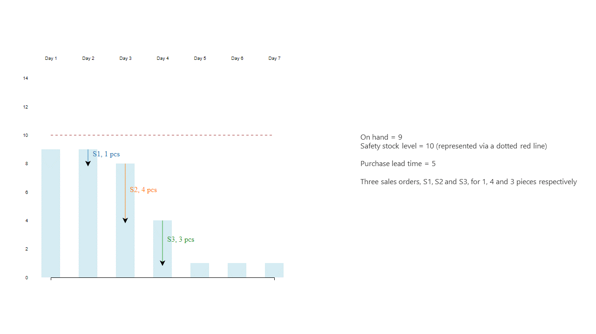 Der Parameter Mindestbestand auffüllen kann die folgenden Werte haben:
{kind=link}
Datum von heute
Die angegebene Mindestmenge wird am Datum erfüllt, wenn der Produktprogrammplan ausgeführt wird. Vom System wird versucht, die Sicherheitslagerbestandsgrenze sobald wie möglich aufzufüllen, obwohl es wegen der Lieferzeit unrealistisch sein kann. 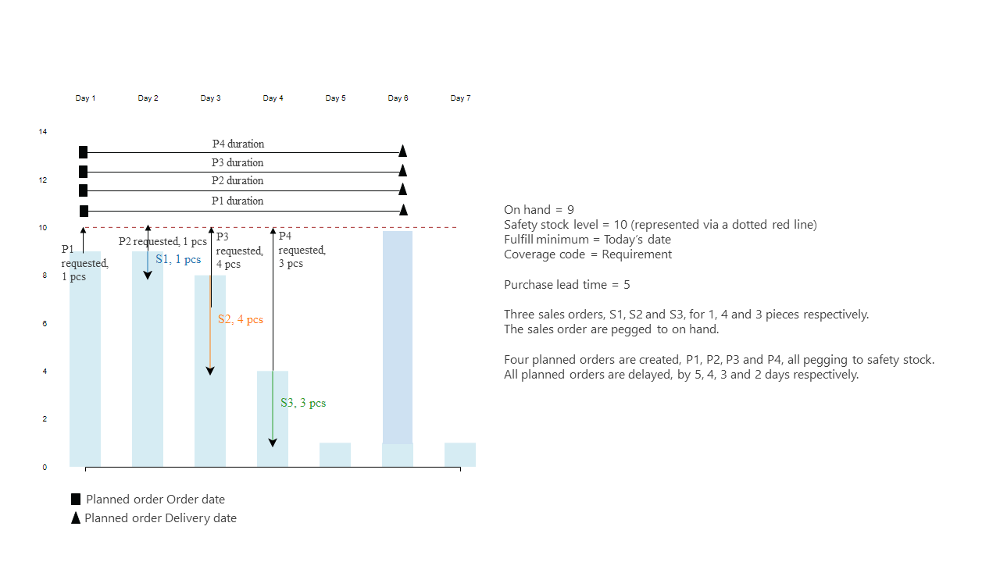 Bestellvorschlag P1 wird für das heutige Datum erstellt, damit der verfügbare Lagerbestand über den Sicherheitslagerbestand an diesem Datum gebracht wird. Die Auftragspositionen S1 bis S3 verringern weiterhin den Lagerbestand. Bestellvorschläge P2 bis P4 werden von dem Produktprogrammplan generiert, sodass der Lagerbestand nach jedem Auftragsbedarf wieder zum Sicherheitsbestand zurückversetzt wird. Wenn das Dispositionsverfahren Bedarf verwendet wird, werden mehrere Bestellvorschläge erstellt. Es empfiehlt sich immer, die Deckung Periode oder Min/Max für Artikel und Materialien zu verwenden, bei denen ein häufiger Bedarf besteht, um die Wiederbeschaffung zu bündeln. Die folgende Abbildung zeigt ein Beispiel des Dispositionsverfahrens für Periode. 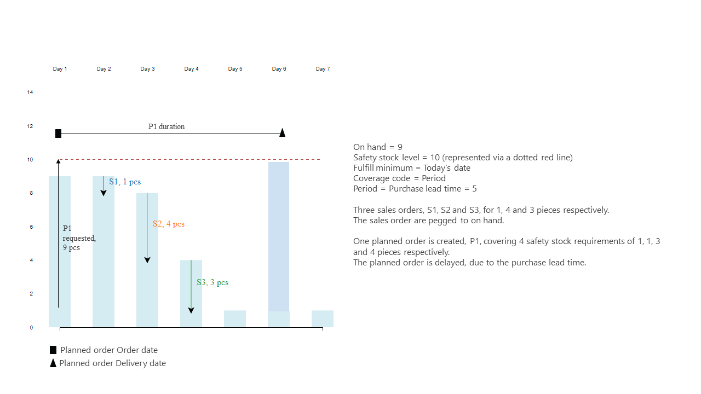 Die folgende Abbildung zeigt ein Beispiel des Dispositionsverfahren Min/Max. 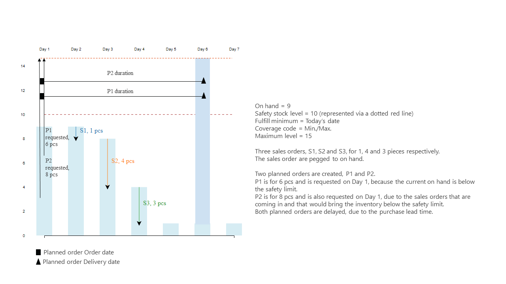
{kind=link}
{kind=link}
{kind=link}
Heutiges Datum + Beschaffungszeit
Die angegebene Mindestmenge wird am Datum erfüllt, an dem der Produktprogrammplan ausgeführt wird, zuzüglich der Durchlaufzeit für Einkauf oder Produktion. Dieses Datum beinhaltet mögliche Sicherheitszuschläge. Wenn eine Handelsvereinbarung für den Artikel besteht und das Kontrollkästchen Handelsvereinbarungen suchen auf der Seite Produktprogrammplanungsparameter aktiviert ist, wird die Lieferzeit aus der Handelsvereinbarung nicht berücksichtigt. Lieferzeiten werden aus den Artikeldeckungseinstellungen oder dem Artikel selbst übernommen.
Durch diesen Erfüllungsmodus werden Pläne mit weniger Verzögerungen und weniger Bestellvorschlägen erstellt, ungeachtet der Deckungsgruppe, die für den Artikel eingerichtet ist. Die folgende Abbildung zeigt das Ergebnis des Plans, wenn das Dispositionsverfahren Bedarf oder Periode ist.
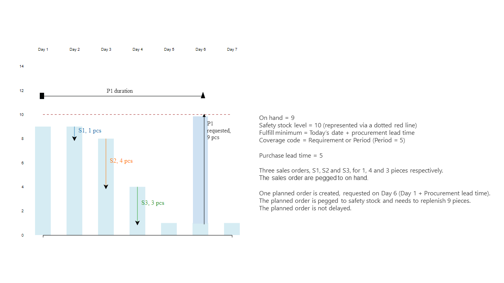 Die folgende Abbildung zeigt das Ergebnis des Plans, wenn das Dispositionsverfahren Min/Max ist.
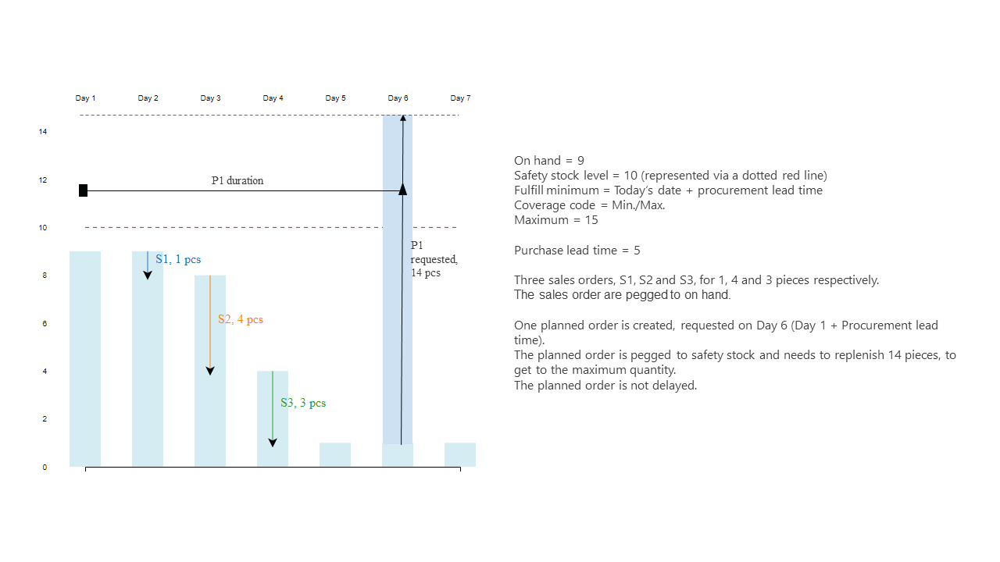
{kind=link}
{kind=link}
Erster Abgang
Die angegebene Mindestmenge wird am Datum erfüllt, wenn der verfügbare Lagerbestand den Mindestbestand unterschreitet, wie in der folgenden Abbildung gezeigt. Selbst wenn der verfügbare Lagerbestand am Datum, an dem der Produktprogrammplan ausgeführt ist, unter dem Mindestbestand liegt, wird durch Erster Abgang nicht versucht, ihn zu decken, bis der nächste Bedarf eintrifft. Die folgende Abbildung zeigt ein Beispiel des Dispositionsverfahrens für Bedarf. 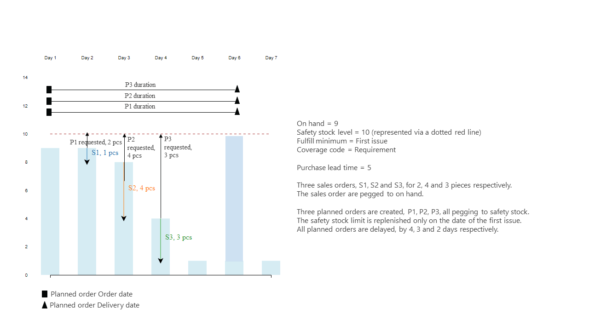 Die folgende Abbildung zeigt ein Beispiel für das Dispositionsverfahren Periode. 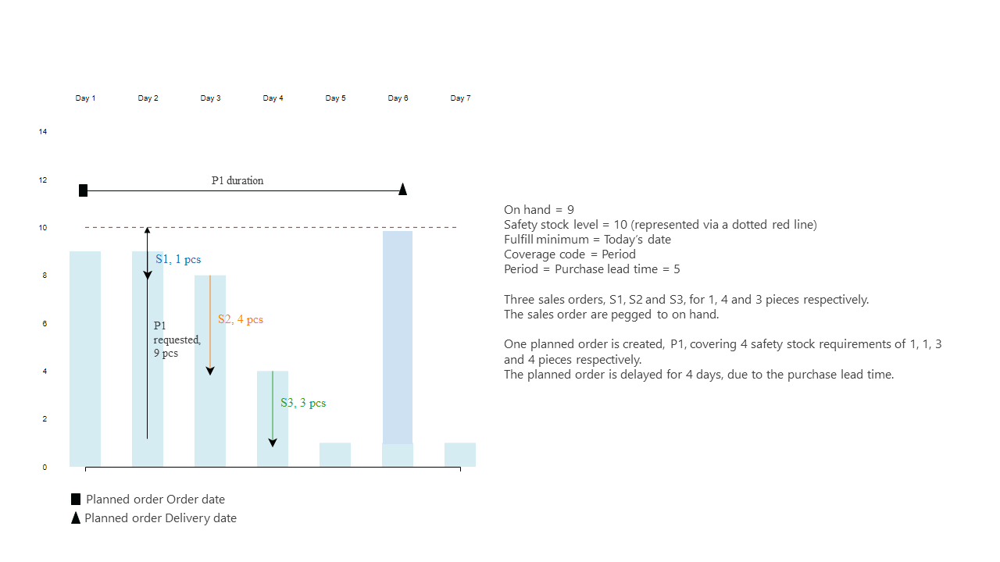 Die folgende Abbildung zeigt ein Beispiel für das Dispositionsverfahren Min/Max. 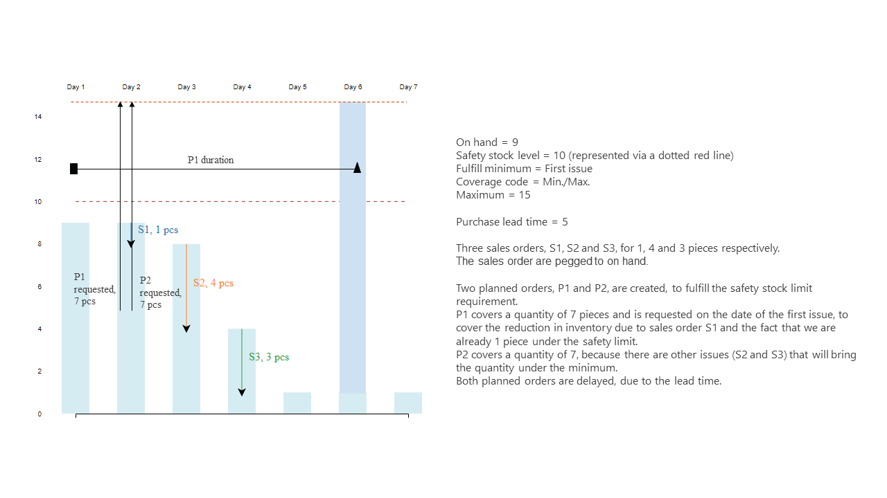 An dem Datum, wenn der Produktprogrammplan ausgeführt wird, wenn der verfügbare Lagerbestand bereits unter dem Sicherheitslagerbestandslimit liegt, löst Heutiges Datum und Heutiges Datum + Beschaffungszeit die Wiederbeschaffung sofort aus. Erster Abgang wartet, bis es eine weitere Abgangsbuchung gibt, wie einen Auftrag oder eine Stücklistenpositionsanforderung für den Artikel, und dann löst er die Wiederbeschaffung am Datum dieser Buchung aus. Am Datum, an dem der Produktprogrammplan ausgeführt wird, wenn der verfügbare Lagerbestand nicht unter dem Sicherheitslagerbestandslimit ist, liefern Heutiges Datum und Erster Abgang genau das gleiche Ergebnis, wie in der Abbildung unten dargestellt.
{kind=link}
{kind=link}
{kind=link}
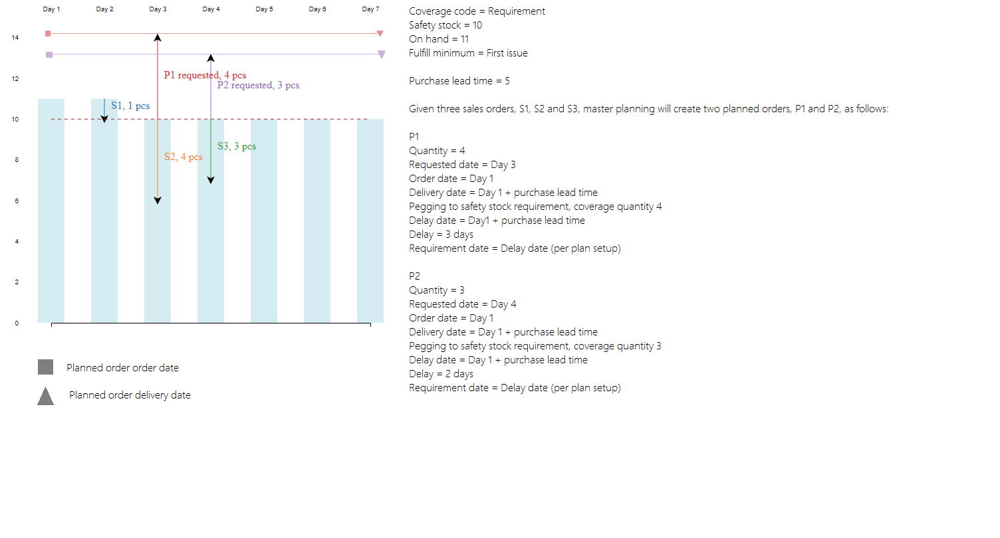 An dem Datum, an dem der Produktprogrammplan ausgeführt wird, wenn der verfügbare Lagerbestand nicht unter dem Sicherheitslagerbestandslimit ist, liefern Heutiges Datum + Beschaffungszeit folgendes Ergebnis, weil dadurch die Erfüllung bis zum Ende der Beschaffungslieferzeit hinausgeschoben wird. 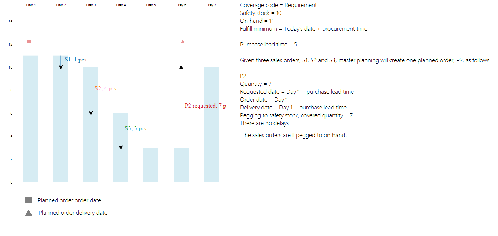
{kind=link}
Planungszeitraum
Die angegebene Mindestmenge wird innerhalb des im Feld Deckungszeitrahmen angegebenen Zeitraums erreicht. Diese Option ist nützlich, wenn der Produktprogrammplan nicht zulässt, dass verfügbarer Bestand für tatsächliche Aufträge verwendet wird, wie beispielsweise Verkäufe oder Übertragungen, beim Versuch, den Sicherheitsbestand einzuhalten. Allerdings wird in einer zukünftigen Version dieser Wiederbeschaffungsmodus nicht mehr benötigt werden, und diese Option wird veraltet sein.
Planen der Sicherheitsbestandswiederbeschaffung für „First Expired, First Out (FEFO)”-Artikel (FEFO auf Deutsch: zuerst abgelaufen, zuerst raus).
Zu irgendeinem Zeitpunkt wird der Lagerzugang mit dem spätesten Ablaufdatum für den Sicherheitsbestand verwendet, damit realer Bedarf, wie Verkaufspositionen oder Stücklistenpositionen, in der FEFO-Reihenfolge (First Expired, First Out = zuerst abgelaufen, zuerst raus) erfüllt werden kann. Um zu zeigen, wie dies funktioniert, beachten Sie folgendes Szenario. 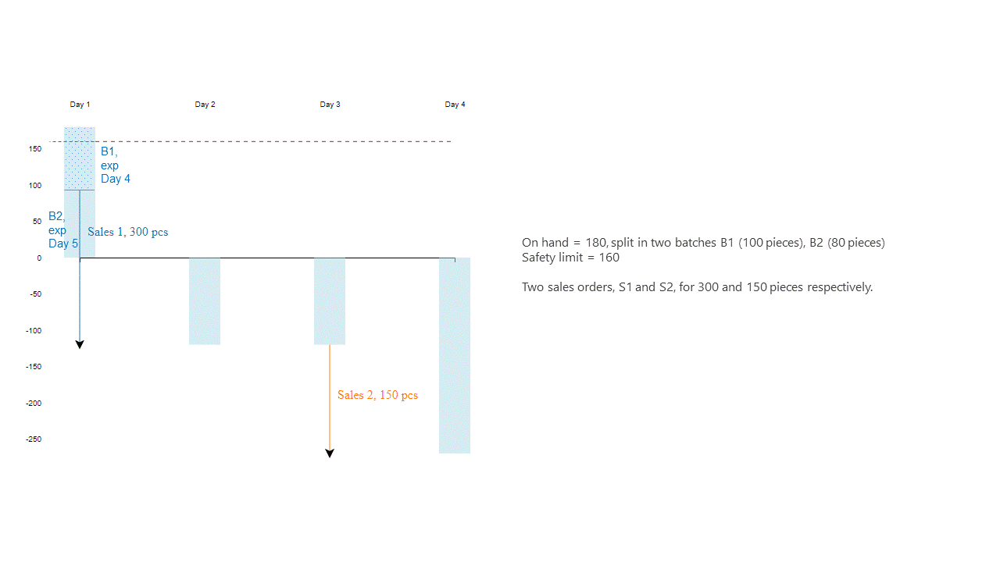 Wenn die Planung ausgeführt wird, umfasst sie den ersten Auftrag aus dem verfügbaren Lagerbestand und eine zusätzliche Bestellung für die Restmenge. 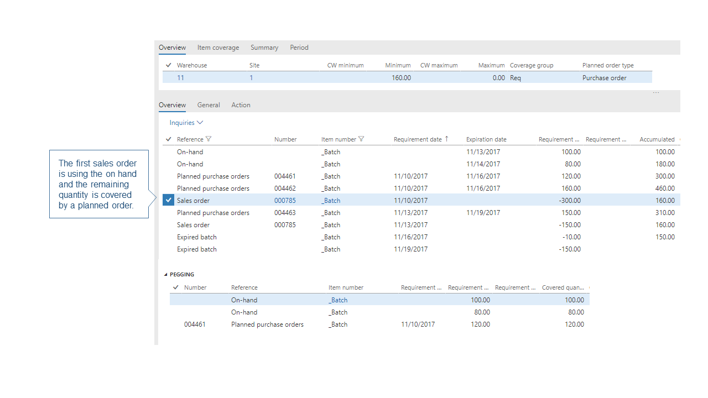 Ein Bestellvorschlag wird erstellt, um sicherzustellen, dass der verfügbare Lagerbestand zum Sicherheitsbestandslimit zurückversetzt wird. 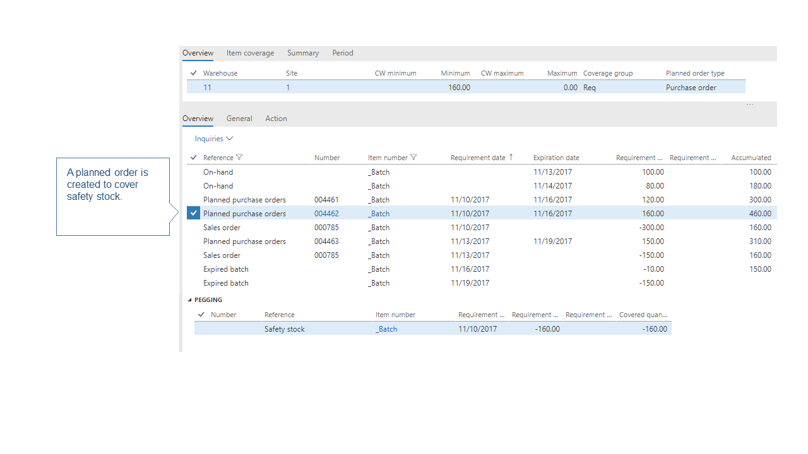 Wenn der zweite Auftrag geplant wird, wird der zuvor erstellte Bestellvorschlag, der den Sicherheitsbestand abdeckt, verwendet, um diese Menge abzudecken. Der Sicherheitsbestand ist also ständig in Bewegung. 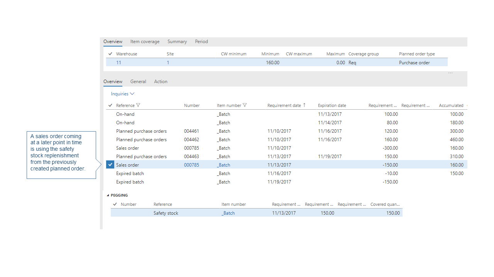 Schließlich wird ein anderer Bestellvorschlag erstellt, um den Sicherheitsbestand abzudecken. 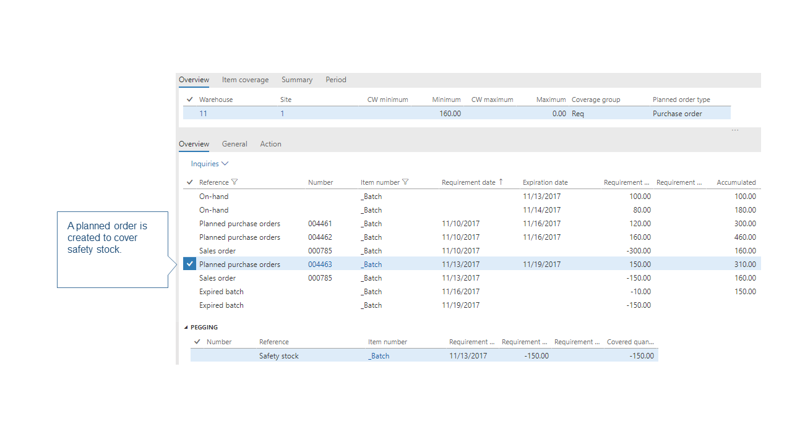 Alle Chargen laufen entsprechend ab, und Bestellvorschläge werden erstellt, um den Sicherheitsbestand wieder aufzufüllen, nachdem er abgelaufen ist.
{kind=link}
{kind=link}
{kind=link}
{kind=link}
{kind=link}
Wie der Produktprogrammplan die Sicherheitsbestandseinschränkung handhabt
Sicherheitslagerbestand wird im System als Bedarfstyp nachverfolgt, genauso wie Auftragspositionen oder Stücklistenbedarf. Sie können die Sicherheitslagerbestandsbedarfs-Position auf der Seite Bedarfsverlauf anzeigen, wenn Sie den Standardfilter in der Spalte Bedarfstyp entfernen.
Die Priorität zur Erfüllung der Sicherheitsbestandsanforderungs-Transaktion wird aufgehoben, wenn vom System festgestellt wird, dass dies zu Verzögerungen in der Erfüllung von tatsächlichem Bedarf führt, wie beispielsweise Verkaufspositionen, Stücklistenpositionen, Umlagerungsanforderung oder Bedarfsplanungspositionen. Andernfalls hat das Sicherstellen, dass der verfügbare Bestand über der Sicherheitsbestandsmenge liegt, dieselbe Priorität, wie irgendwelche anderen Bedarfstypen. Dadurch wird sichergestellt, dass es keine Verzögerungen bei realen Transaktionen gibt, und eine überhöhte Wiederbeschaffung und eine verfrühte Wiederbeschaffung von Sicherheitslagerbestand kann so leichter vermieden werden.
Während der Deckungsphase der Produktprogrammplanung wird die Priorität für die Wiederbeschaffung von Sicherheitslagerbestand nicht mehr aufgehoben. Verfügbarer Lagerbestand kann vor irgendwelchen anderen Bedarfstypen verwendet werden. Während der Verzögerungsberechnung wird neue Logik hinzugefügt, um die verzögerten Verkaufspositionen, Stücklistenpositionsbedarf und alle anderen Bedarfstypen durchzugehen, um zu bestimmen, ob sie rechtzeitig geliefert werden können, vorausgesetzt, dass der Sicherheitslagerbestand verwendet wird. Wenn das System identifiziert, dass es Verzögerungen durch die Verwendung des Sicherheitsbestands minimieren kann, dann werden Verkaufspositionen und Stücklistenpositionen ihre anfängliche Deckung durch Sicherheitsbestand ersetzen, und das System löst stattdessen die Wiederbeschaffung für den Sicherheitsbestand aus.
Wenn der Plan oder der Artikel nicht für verzögerte Berechnung eingerichtet ist, dann hat die Sicherheitsbestandseinschränkung dieselbe Priorität, wie beliebige andere Bedarfstypen. Das bedeutet, dass es eine Reserve von griffbereitem und anderem verfügbarem Bestand vor anderen Bedarfstypen gibt.